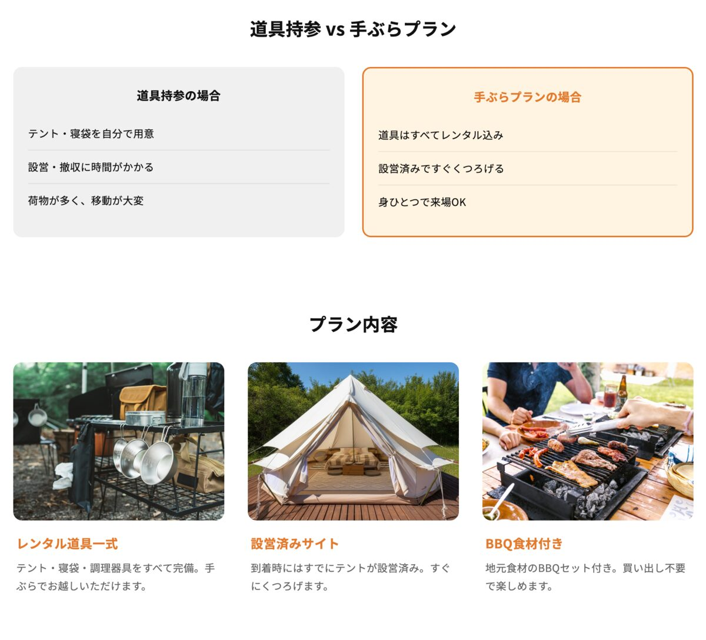
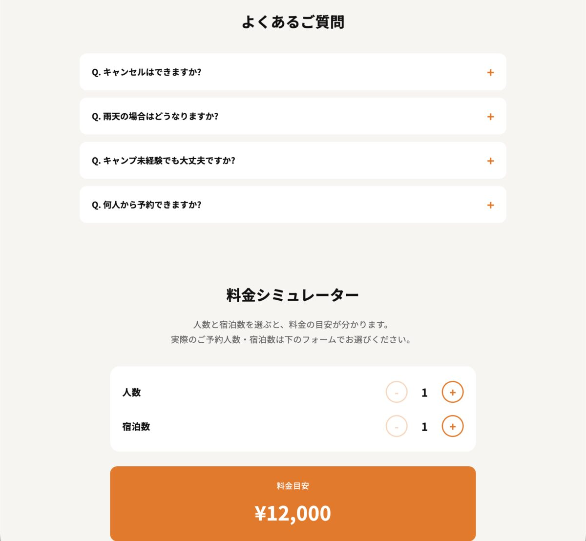

制作の目的
「初めてのキャンプで道具を揃えるハードルを感じている人」に向けて、不安を解消しながら予約まで導くことを目的にしました。課題提起→比較→プラン紹介→お客様の声→FAQという流れで、読み進めるほど不安が解消されるよう構成を自分で設計しています。

取り組み方について
このLPは、構成・見出し・訴求文言・各セクションの並び順は自分で設計しましたが、料金シミュレーターやFAQアコーディオンのようなJavaScriptの実装は、AIツール(Claude)の支援を受けながら制作しました。現在HTML/CSSの学習を進めている段階で、これらの機能を自力で書けるレベルにはまだ至っていません。
工夫した点・学んだこと
力を入れたのは、ユーザーが読み進める順番の設計です。いきなり料金や予約を出すのではなく、悩みへの共感→解決策の提示→安心材料(お客様の声・FAQ)という順番にすることで、離脱しにくい流れを意識しました。実装をAIに任せる中でも、できあがったコードを読み、料金シミュレーターやFAQの開閉がどのような仕組みで動いているかを理解する作業を行い、次に自分で似た機能を書くときの土台になる学びを得ました。
